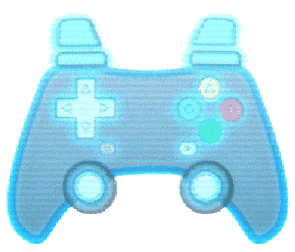

virtual-gamepad-lib

Virtual Gamepad Lib
EXAMPLES & DEMOS | DOCS | GETTING STARTED | CHANGELOG
All the parts needed to display and emulate interactive virtual gamepads on the web for multi-touch, mouse, keyboard, or simulated interaction.
Features:
- Compatible with any gamepad library or game engine that uses the browser Gamepad API.
- Download our premade SVG gamepads or make your own fully unique onscreen gamepad with SVG or HTML elements.
- Display the state of any number of gamepads onscreen.
- Mock gamepads to test your game interactively in the browser.
Modules
Each module can be used separately, but they work best together!
GamepadEmulator - Source
Add emulated gamepads to the browser Gamepad API. Emulated gamepads are controlled from any source - like mouse, keyboard or multiplayer game events. Use with the GamepadDisplay module for drop in multi-touch and mouse interaction.
GamepadDisplay - Source
Display the state of any gamepad (emulated or not) in SVG or HTML in a very customizable way.
GamepadApiWrapper - Source
Receive the state of any gamepad as a series of customizable events.
Getting Started
Installation
npm install virtual-gamepad-lib
Importing
import {
GamepadApiWrapper, // gamepad
GamepadEmulator,
GamepadDisplay,
CenterTransformOrigin, CenterTransformOriginDebug, // utilities
gamepadButtonType, gamepadDirection, gamepadEmulationState, // ... enums
} from "virtual-gamepad-lib";
// typescript types can be imported just the same with
import type { ... } from 'virtual-gamepad-lib';
/* ------ OR if using common.js ------- */
const {
GamepadApiWrapper,
/* etc... */
} = require('virtual-gamepad-lib');
If using a bundler with "moduleResolution" set to "NodeNext" or "Node16" or greater in jsconfig.json or tsconfig.json, you can import the modules separately like this:
import { GamepadEmulator } from 'virtual-gamepad-lib/GamepadEmulator';
import { GamepadDisplay } from 'virtual-gamepad-lib/GamepadDisplay';
import { GamepadApiWrapper } from 'virtual-gamepad-lib/GamepadApiWrapper';
import { gamepadButtonType, gamepadDirection, gamepadEmulationState } from "virtual-gamepad-lib/enums";
import { CenterTransformOrigin, CenterTransformOriginDebug } from "virtual-gamepad-lib/utilities";
// typescript types can be imported just the same with import type { ... } from 'virtual-gamepad-lib/...';
/* ------ OR if using common.js ------- */
const { GamepadEmulator } = require('virtual-gamepad-lib/GamepadEmulator');
/* etc... */
Otherwise, you can import the modules separately like this:
import { GamepadApiWrapper } from "virtual-gamepad-lib/dist/GamepadApiWrapper";
import { GamepadEmulator } from "virtual-gamepad-lib/dist/GamepadEmulator";
import { GamepadDisplay } from "virtual-gamepad-lib/dist/GamepadDisplay";
import { gamepadButtonType, gamepadDirection, gamepadEmulationState } from "virtual-gamepad-lib/dist/enums";
import { CenterTransformOrigin, CenterTransformOriginDebug } from "virtual-gamepad-lib/dist/utilities";
// typescript types can be imported just the same with import type { ... } from 'virtual-gamepad-lib/dist/...';
/* ------ OR if using common.js ------- */
const { GamepadEmulator } = require('virtual-gamepad-lib/dist/cjs/GamepadEmulator');
/* etc... */
Usage
See the code examples which are live demos at kw-m.github.io/virtual-gamepad-lib
SVG Authoring Tips
Making custom svg gamepads for display on screen can be a bit tricky, but here are some tips to make it easier:
- Download example vector gamepads from the assets folder:
- Affinity Suite (original)
- Adobe Creative Suite
- SVG
- Export the gamepad as an svg and copy the full contents inline into your html or add the full svg contents to the page at runtime.
- In your vector graphics program, name your layers with this format:
svgElementIdorsvgElementId.svgElementClassto make it easier to split the id and class attributes in the exported svg with the automated SVGO plugin below or the regex find and replace below. - Use the export option "flatten transforms" or "use absolute positioning" in your vector graphics program OR Wrap an empty group around any part of your svg that you want to apply css transforms to and make sure the element you wish to animate within the empty group is labeled with a recognizable id. Without an empty group, any css driven transforms may overwrite the transforms applied by your vector graphics program - see this question and this solution.
- Use the centerTransformOrigin() function in utilities.ts on all elements you wish to rotate or scale using css. This will allow you to use css transforms based on the center of the element rather than the center of the svg.
- Alternatively set the css properties:
transform-origin: center center; transform-box: fill-boxon these svg elements; Note that this won't play nice in some browsers or with all vector program exports (especially matrix transforms).
- Alternatively set the css properties:
- Make sure your tap zones (.e.g around buttons or joysticks) are the only elements that are tapable / clickable, not parent elements or groups. This can be done by setting the css property
pointer-events: allon the tap targets andpointer-events: noneon all other SVG elements. If you don't do this, the browser default drag behaviors will not be correctly disabled on joysticks & buttons. - If you want to use a custom cursor, make sure to set the css property
cursor: noneon the svg tap elements. This will prevent the browser from displaying the default cursor when hovering over the svg.
Exporting SVG from Adobe Illustrator:
See: https://www.youtube.com/watch?v=bWcweY66DL8

Exporting SVG from Affinity Designer & Affinity Photo:

SVGO / SVGOMG Options:
Auto (recommened)
Use the pre-configured SVGO config in the source github repo. It will optimize the svgs while retaining compatiblity with css & js interaction. Use the config with the SVGO CLI. The config file is located at: svgo.config.js which imports svgo-IdClassSplitterPlugin.js. See the optimize:svg npm script in the package.json for an example of how to use the config with the SVGO CLI.
Manual (not recommened)
- This method will not avoid ID collisions between svgs on a page like the SVGO CLI config in the project source does
- Disable
Clean IDsto keep theidattributes of the SVG elements from your editor - Disable
Remove ViewBoxto keep theviewBoxattribute, which makes scaling the SVG easier - Disable
Remove Unknowns & Defaultsas this can remove theidandclassattributes even ifClean IDsis off - Disable
Remove unneeded group attrsandcollapse useless groupsif you used empty groups to alllow css transforms apply correctly to svg elements. - Disable
Remove hidden elementsif you used transparent or hidden elements as touch targets or bounding boxes - Disable
Merge Pathsif you used overlapping paths that should be separate elements on the gamepad, eg: touch targets for the d-pad or buttons - Disable
Remove titleorRemove descif the title or description is relavant for acessability
If you format your layer names in the format elementId.elementClass, you can use the following regular expression to extract the elementId and elementClass from the layer name (The pre-configured SVGO config has a improved version of this inbuilt, but you can do this manually with find and replace):
Example:
<path id="right_highlight.gpad-highlight" />
becomes
<path id="right_highlight" class="gpad-highlight" />
Find (Regex):
/id="([^"\.]*)(?:"|(?:.([^"\.]*)"))/g
Replace:
id="$1" class="$2"
Contributing
Contributions are welcome! This project is still in early development, so there are many ways to contribute.
- Report bugs - If you find a bug, please report it in the issues section.
- Contribute Documentation
- Checkout a fork of the project and run
npm run docs:devto view the docs locally, then edit comments in the source code or README and submit a pull request!
- Checkout a fork of the project and run
- Contribute Code
- This project uses PNPM for package management, so download a copy first. Or use NPM or Yarn if you prefer, just replace PNPM with NPM or YARN when running the scripts in package.json. (eg:
pnpm run buildbecomesnpm run build) - Checkout a fork of the project, add new features or bugfixes and
pnpm run test:lib,pnpm run build:libto build the library, andpnpm run dev:examplesto check the examples are working locally. Runprecompile:examplesand submit a pull request!
- This project uses PNPM for package management, so download a copy first. Or use NPM or Yarn if you prefer, just replace PNPM with NPM or YARN when running the scripts in package.json. (eg:
NPM / PNPM / Yarn scripts:
- build:lib - Build the library
- build:docs - Build the documentation
- optimize:svg - Run SVGO on the SVGs in the assets/svg/originals folder
- precompile:examples - Precompile the TS examples to JS for folks who don't use typescript - Run this before submitting a PR
- dev:examples - Start a dev server for the examples
- build:examples - Build the examples
- preview:examples - Preview the examples once built